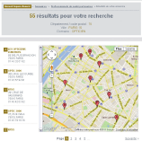

1. Choisissez votre opticien partenaire ou vérifiez que votre opticien habituel fait partie du réseau :
▪ Par téléphone : 01 53 21 24 25 Les conseillers Carte Blanche sont disponibles 24h/24, 7j/7.
▪ Par Internet :
 ⇢ En vous identifiant sur www.swisslife.fr dans votre espace client (vos références se trouvant sur votre relevé de prestations),vous pourrez accéder au site de Carte Blanche.
⇢ Dans la rubrique ANNUAIRES, cliquez sur PROFESSIONNELS DE SANTE PARTENAIRES. Une fois sur la page, votre département ou code pos- indiquez tal, votre ville et cochez la casetal, votre ville et cochez la case « Opticiens ».
⇢ Vous obtiendrez ensuite la liste de résultats de votre recherche, tous les noms et adresses des opticiens trouvés et une localisation sur un plan.
2. Bénéficiez de l’ensemble des avantages qui vous sont réservés. Pensez à indiquer que vous êtes un client Swiss Life et à présenter votre carte de tiers-payant à votre opticien.
Dans les tous cas, vous restez libre de consulter l’opticien de votre choix et bénéficierez des remboursements de Swiss Life mais sans le tiers-payant.